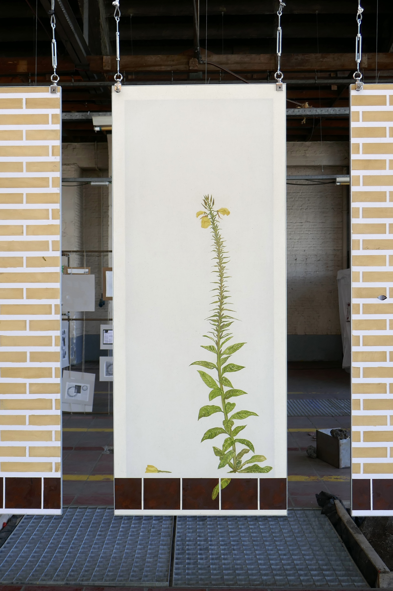
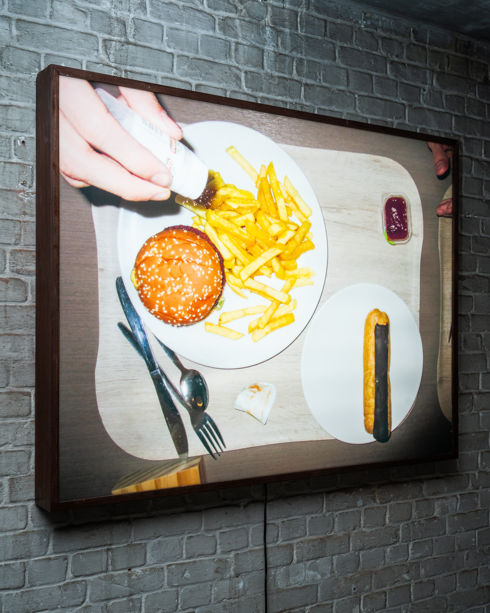
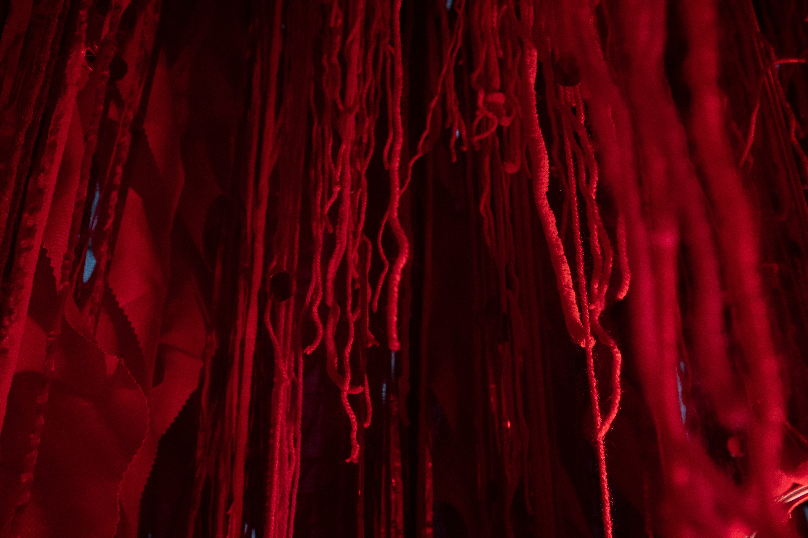
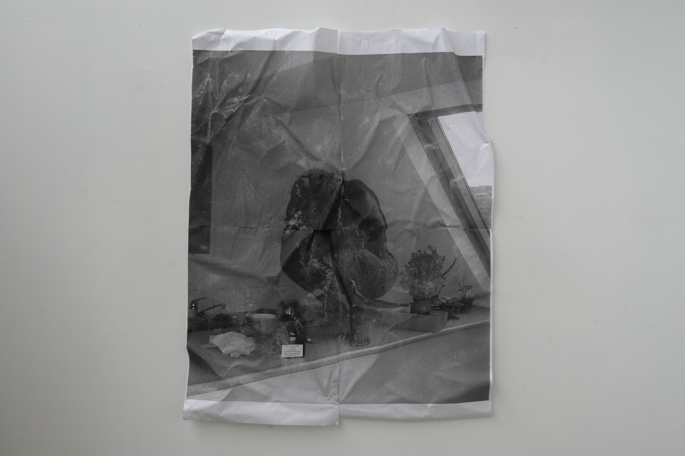
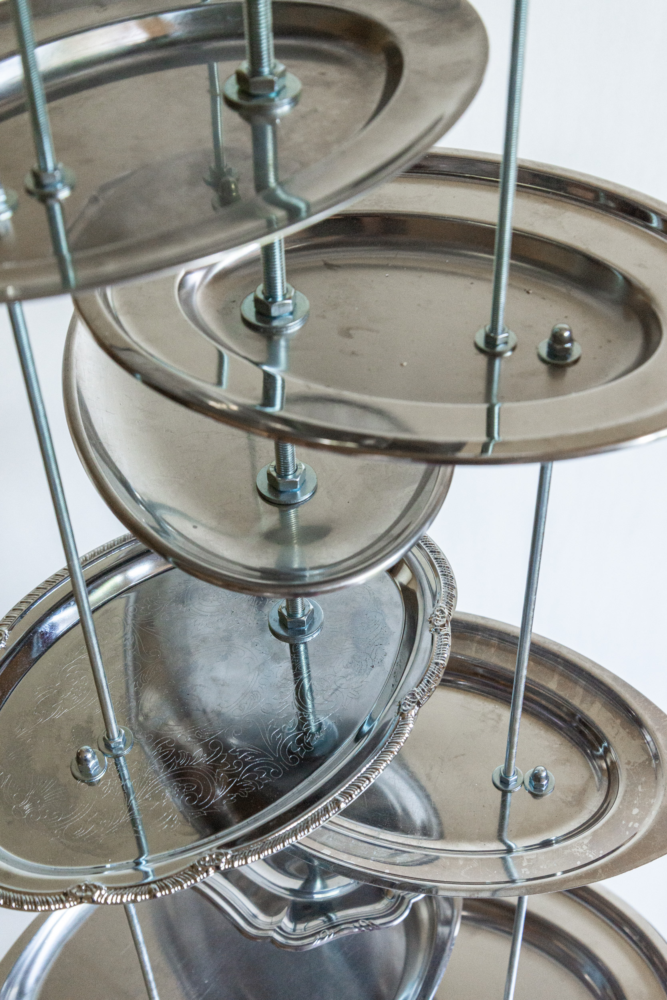
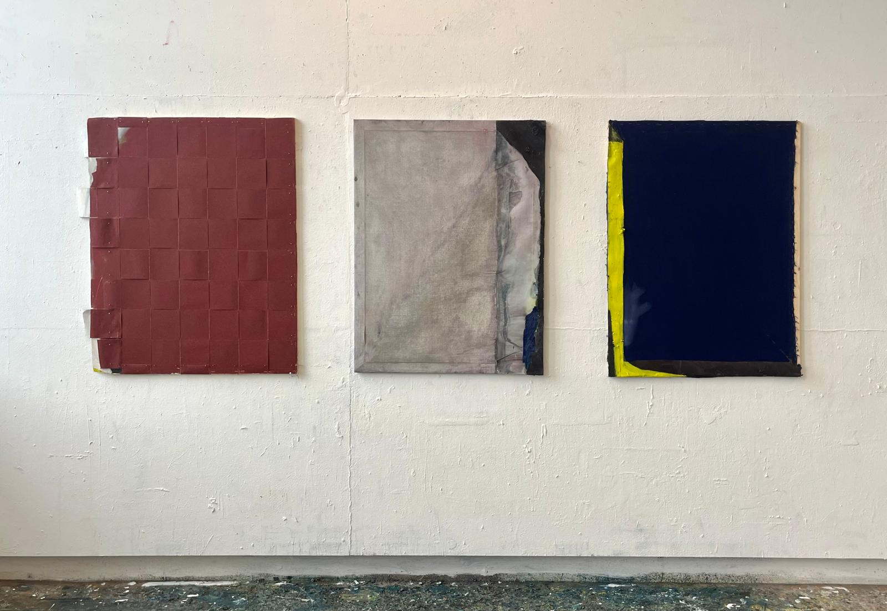
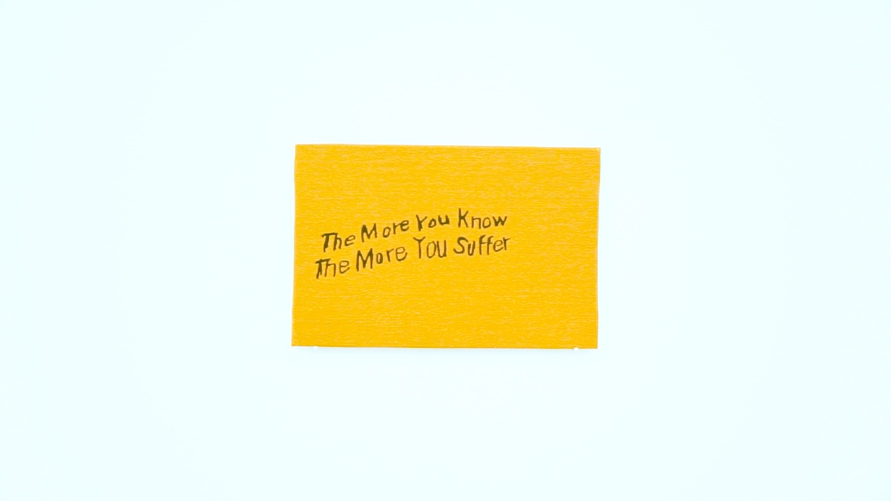
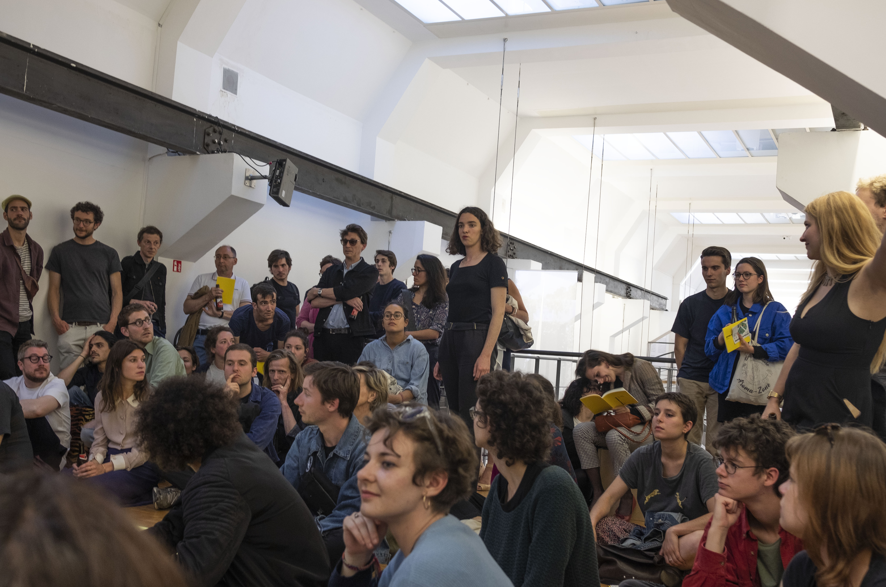

Apotheek De Bond
Bondgenotenlaan 131, 3000 Leuven
Open in Maps
Shailey Shah — Dream Catcher

Nederlands
Keramische sculpturen worden droomwerelden: elke vorm belichaamt een individuele droom, verbonden aan een wolkvorm. Tussen het vluchtige en het gewichtige ligt een veld van herinneringen, verlangens en nieuwe mogelijkheden.
English
Ceramic sculptures become dreamscapes: each form embodies an individual dream, tethered to a cloud-like structure. Between the fleeting and the weighty lies a field of memories, desires, and fresh possibilities.
Bauke Driessens — Window of Fading Boundaries

Nederlands
Drie raamkaders met transparant doek laten binnen en buiten in elkaar overlopen. Omdat de panelen aan beide zijden zijn beschilderd, toont het werk zich nooit in één oogopslag — perceptie, constructie en deconstructie blijven in beweging.
English
Three window frames with transparent fabric let inside and outside bleed into each other. Painted on both sides, the work never reveals itself at once—perception, construction and deconstruction stay in motion.
Jente Waerzeggers — Window Lickin’ Good

Nederlands
Ruwe, directe beelden uit de muziek- en kunstscene verschijnen als lichtbakken in de etalage. Het werk speelt met de grens tussen commercie en kunst en nodigt uit om te blijven kijken.
English
Raw, direct images from the music and art scene appear as lightboxes in the window. The work toys with the line between commerce and art and invites lingering attention.
Nora Mahammed — Heart Capsule

Nederlands
Een zintuiglijke ruimte als liefdevolle capsule: textuur, kleur, geluid en vorm vertragen de tijd en openen het lichaam voor gevoel. Een plek voor aanwezigheid, resonantie en zachte transformatie.
English
A sensory space as a loving capsule: texture, color, sound and form slow time and reopen the body to feeling. A site for presence, resonance, and gentle transformation.
Pol Olivier Matanda — When Alone, the Stars Are Between Us

Nederlands
Papier en suiker ontmoeten elkaar in fragiele constellaties over intimiteit en herinnering. Het vluchtige wordt tastbaar en laat, ondanks het vervagen van details, een blijvende afdruk achter.
English
Paper and sugar meet in fragile constellations about intimacy and remembrance. The ephemeral becomes tangible and, even as details fade, leaves a lasting imprint.
Jason Slabbynck — Tray Tower

Nederlands
Een toren van gerecycleerde metalen dienbladen draait traag achter het raam: huiselijk en monumentaal tegelijk. Herkenning slaat om in vervreemding en zet aan tot kijken zonder belofte van inhoud.
English
A tower of recycled metal trays turns slowly behind the glass: at once domestic and monumental. Familiarity slips into estrangement, inviting looking without the promise of content.
Jonathan Van de Wal — Questions, answers and questions?

Nederlands
Schilderingen en assemblages die vragen stapelen in plaats van ze te sluiten. Tussen humor en mysterie ontvouwt zich een eigen logica die betekenis oprekt.
English
Paintings and assemblages that stack questions rather than close them. Between humor and mystery, an internal logic stretches what ‘meaning’ can be.
30CC Schouwburg
Bondgenotenlaan 21, 3000 Leuven
Open in Maps
Camille Lemille — Graphic Scores

Nederlands
Luisteren naar de stad en haar klanklandschappen vertalen naar grafische partituren. De publieke ruimte wordt een archief van ritmes, technologieën en begroetingen in een specifiek moment.
English
Listening to the city and transcribing its soundscapes into graphic scores. Public space becomes an archive of rhythms, technologies, and greetings in a specific moment.
Folie Dameskleding
Rector De Somerplein 11, 3000 Leuven
Open in Maps
Niels Poiz — Collage-installatie

Nederlands
Taal, popsongs en dagboekfragmenten vormen een collage die verhaallijnen opent en meteen weer ondermijnt. Originelen mengen zich met reproducties; niets staat definitief vast.
English
Language, pop songs and diary fragments form a collage that opens narrative threads only to unravel them. Originals mix with reproductions; nothing settles for long.
Bushalte De Lijn
Rector De Somerplein, 3000 Leuven
Open in Maps
Camille Lemille — Bus Stop Score

Nederlands
Een partituur voor de bushalte: transactiegeluiden, motoren, begroetingen en stiltes weven een momentopname. Luisteren wordt een manier om de stad te lezen.
English
A score for the bus stop: transaction beeps, engines, greetings and silences weave a snapshot in time. Listening becomes a way to read the city.